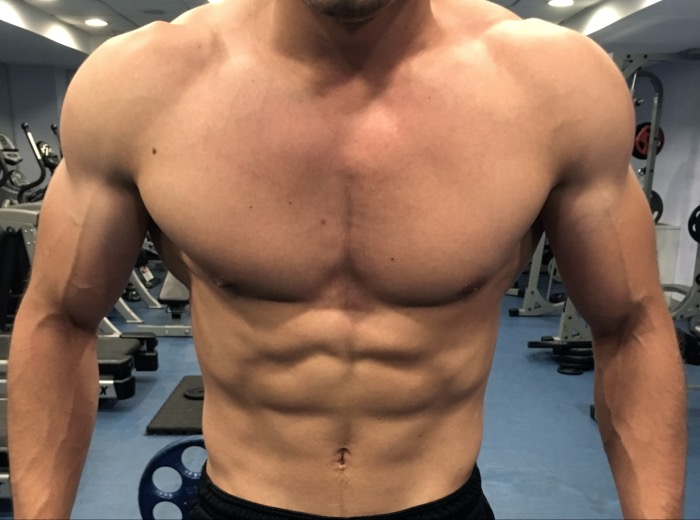
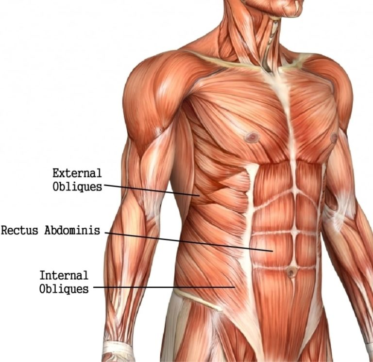
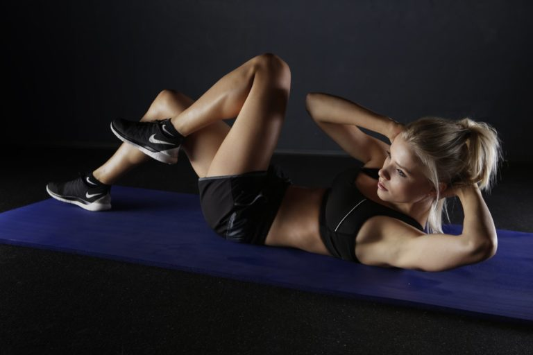

PARAMPARÇA KARIN KASLARI NASIL YAPILIR?
Karın kası, estetik bir vücuda sahip olmak isteyen herkesin hayalidir. Peki karın kasları nasıl yapılır?
Bu yazıda en etkili karın kası hareketleri, karın kaslarına giden yolda yapılan hatalar, antrenman videoları, kas anatomisi ve daha birçok şey var!
Kısacası karın kasına giden yolda aradığınız ne varsa, işte burada.
Parçalı göbeğin faydaları:
- Bel çevreniz inceldikçe omuzlarınız daha geniş görünür. Omuz kasları için ne kadar çalışsanız da elde edemeyeceğiniz illüzyonu size verir.
- Gariptir, kızların hoşuna gidiyor.
- Daha da ilginci, erkekler karın kaslarınızı görmek için daha takıntılı!
- Yağ oranınız düşük olması gerektiği için daha sağlıklı.
- Elde etmesi ve koruması zor değil! Karın kasının basit bir formülü var, buyrun bu yazıda size izah edelim!

Karın Kası Anatomisi
- M. Rectus Abdominis
- M. Obliquus Externus Abdominis (External Oblik)
- M. Obliquus İnternus Abdominis (İnternal Oblik)
Tabii ki bunlar dışardan görünen kas grupları, bunlar dışında birçok kas grubu daha karnımızda bulunuyor, fakat estetik için bunları bilmemiz yeterlidir.

En Etkili Karın Kası Hareketleri
Video
Eğer bu video sizi kesmezse, aşağıdaki egzersizleri YouTube’de aratın, hepsini videolu şekilde izleyebilirsiniz.
Birçoğu ağırlıksız, ekipmansız uygulanabilecek egzersizler.
Doğru formda yaptığınız sürece, ağırlık kullanmasanız dahi antrenman programınızdaki büyük bileşik egzersizlere yıllar boyunca destek oluşturabilirler.
- Abs Wheel Rollout: M.Rectus Abdominis, M.Obliquus Externus Abdominis, M.Obliquus internus Abdominis
- Hanging Leg Raise: M.Rectus Abdominis
- Twisting Hanging Leg Raise: M.Rectus Abdominis, M.Obliquus Externus Abdominis, M.Obliquus İnternus Abdominis
- Plank: M.Rectus Abdominis, M.Obliquus Externus Abdominis, M.Obliquus İnternus Abdominis
- İncline Reverse Crunch: M.Rectus Abdominis, M.Obliquus Externus Abdominis, M.Obliquus İnternus Abdominis
- Mountain Climber Exercise: M.Rectus Abdominis, M.Obliquus Externus Abdominis, M.Obliquus İnternus Abdominis
- Side Plank: M.Rectus Abdominis, M.Obliquus Externus
- Wood Chopper veya Oblique Twist: M.Obliquus Externus Abdominis, M.Obliquus İnternus
- Stomach Vaccuum: Transverse Abdominis
- Prone Cobra: Bu gövdenizin arkadan da estetik görünmesi için, bir Erector Spinae egzersizi.

Karın Kasları için Tavsiyeler
Beslenme ve yağ oranı: Karın kası için en çok dikkat edilmesi gereken konu beslenme ve yağ oranıdır.
Karın kaslarımız için yediğimiz her şeyin önemi vardır, vücudumuza işimize yaramayan gereksiz besinleri alırsak istediğimiz karın kaslarına kesinlikle ulaşamayız.
Öncelikle sağlıklı beslenmeyi ilke haline getirmemiz gereklidir. İlginç diyetler uygulamanıza gerek yok, sağlıklı beslenip vücudunuza gereksiz kalori yükleyecek besinlerden uzak durmaya çalışırsanız işiniz kolaylaşacaktır.
Kalori hesabı yapın: Aslında yapılması gereken kalori hesabıdır.
Yeni başlayan bir sporcu iseniz kalori hesabı yapmak size biraz zor gelebilir fakat günlük kalori hesaplama sayfamızdaki adımları izleyerek bunu rahatlıkla yapabilirsiniz.
Antrenman sıklığını doğru ayarlayın: Ne demiştik, fazla çalışmak karın kasları için hiçbir işimize yaramayacaktır. Bu yüzden haftada en fazla 2 gün karın kaslarımızı çalıştırmak yeterli olacaktır. Zaten indirekt çalışmalar da karın kaslarını çalıştırdığı için bu yeterlidir.
Compound (bileşik) egzersizler uygulayın: Omurganıza gereksiz yük bindirecek egzersizlerden kaçının, lakin doğru formlarını öğrenerek Squat, Deadlift gibi hareketleri de yapın.
Kardiyo antrenmanlarınızı eksik etmeyin: Kardiyo antrenmanları yağ yakımından ziyade, antrenman kapasitenizi artırmak için de çok önemlidir. Hem enerji açığı oluşturmak hem yağ yakımını hızlandırmak için antrenmanlarınıza mutlaka kardiyo egzersizleri ekleyin.
Karın kası için aşırı yüksek tekrarlar uygulamayın: Karın kaslarımız çok farklı kas grupları gibi davranmamıza gerek yoktur.
1 sette yapılan 25-30-50 tekrarların size hiçbir faydası olmayacaktır.
Hareketleri 3 setten 10-15 tekrar arası uygulamanız yeterli olacaktır.
Hareketleri doğru formda uygulamaya özen gösterin: Hareketlerin nasıl yapıldığı iyice öğrenin ve doğru formda uygulamaya çalışın, yanlış formda uygularsanız egzersizden alacağınız fayda azalacaktır.